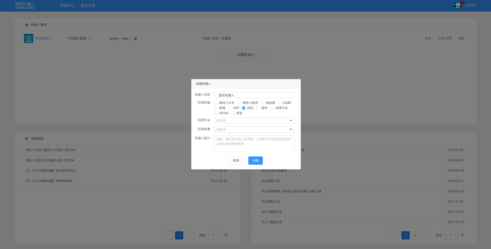
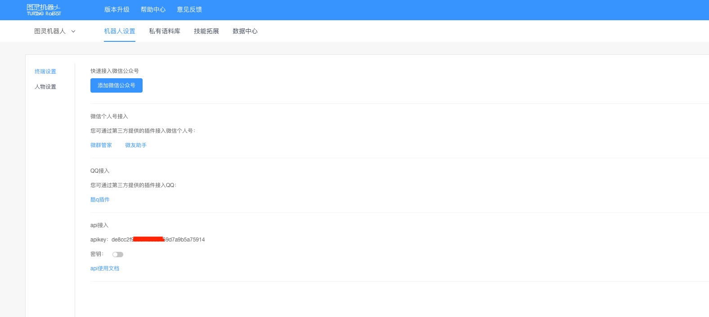

itchat是一个开源的微信个人号接口，使用python调用微信从未如此简单。
使用不到三十行的代码，就可以完成一个能够处理所有信息的微信机器人。
首先安装itchat
1 | pip install itchat |
接下来就可以针对对方发的关键字进行回复了
1 | import itchat, re |
然后扫描文件生成的二维码登录即可。
上述方法的回复较为单一，如果要想实现更丰富的回复措辞，可以使用机器人。
登录这个网址：http://www.tuling123.com/help/h_cent_webapi.jhtml ，可以通过注册使用一个现成的机器人——图灵机器人。
注册后，创建一个机器人，在应用终端中选择“网站”。

点击创建好机器人，可以获取一个 apikey 。

代码如下：
1 | import requests |
现在，当微信收到消息，调用的图灵机器人就会自动分析消息的意思，做出简单的回应。